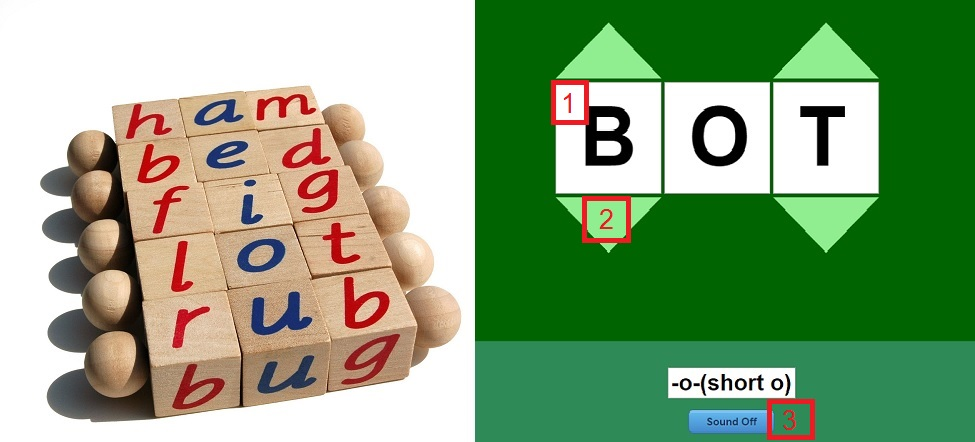
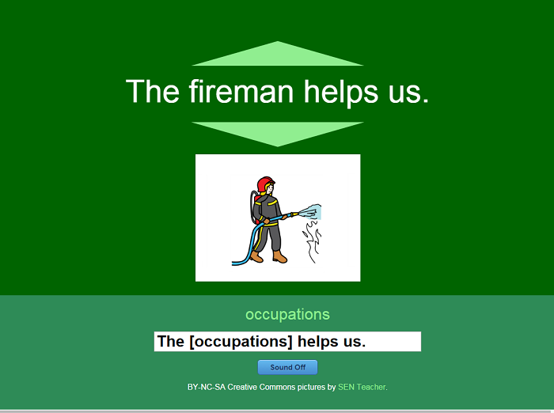
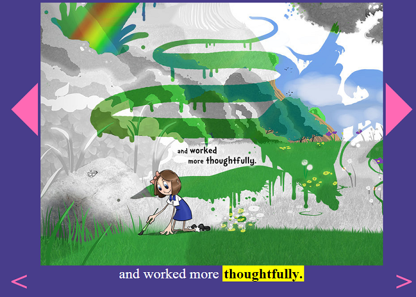
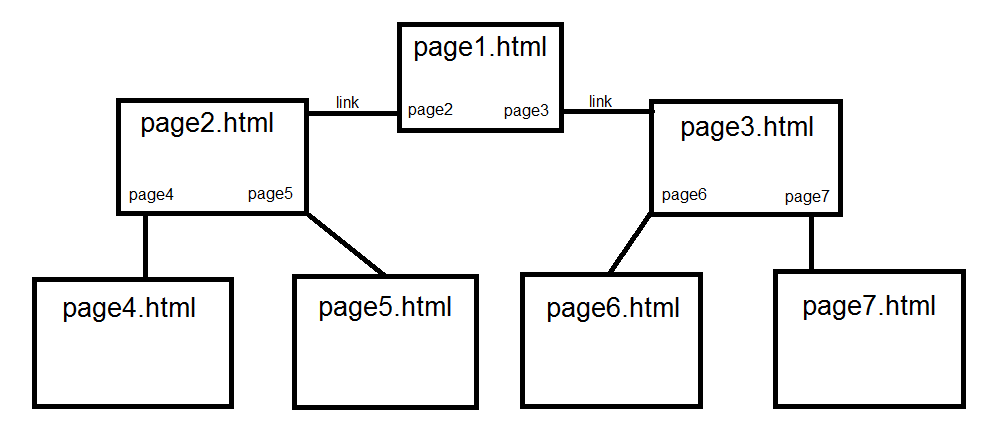
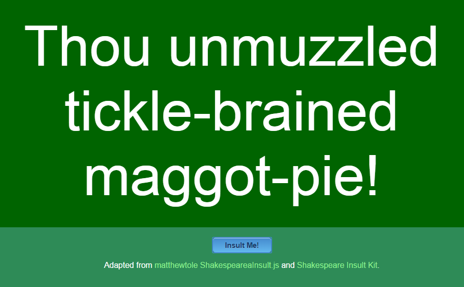
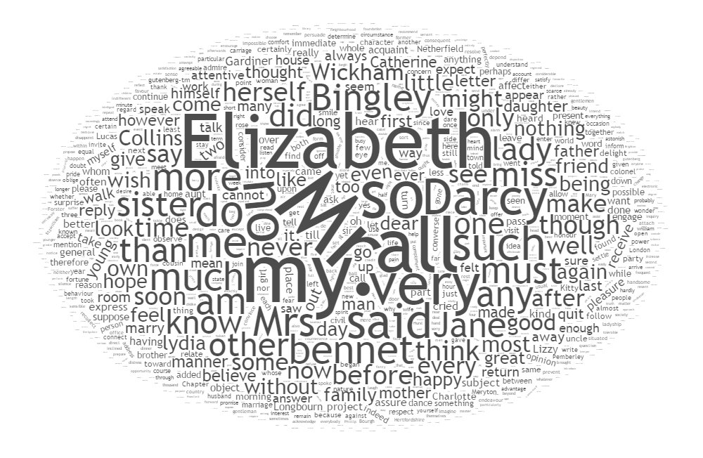

When it comes to learning the alphabet, phonetics, site words, and the joys of text, I'm a big fan of exposing children to text in a wide variety ways. Software doesn't replace the hands-on activities like the ABC blocks, cut-out letters, flip-books, and other toys--I see those remaining king with my own children--but the animations, sound-effects, and interactivites of computer applications compliment all the other ways we expose children to the alphabet, phonetics, and reading.
A great source of app-inspiration for me are Montessori toys. Flip-books, spinning letter blocks, and alphabet gems readily translate into simple virtual toys that young kids can enjoy alongside their hands-on ones. For example, the One-Letter Word Changer shown below on the right is a digital version of the Montessorri word-blocks on the left. Clicking the up and down arrows cycles through the letter options, so "BOT" becomes "COT," "DOT," "GOT," "HOT," "NOT," etc. Taking advantage of Google Chrome's speechSynthesis javascript functionality, I have the browser read each word as it is selected.

Of course, as with all applications, I could not build it alone. I had help... lot's of it. The numbers I've added to the screenshot above correspond to web searches like the following:
Once I had the One-Letter Word-Changer complete, it was an elementary task to adapt it into a One-Word Sentence Changer. Again, with some help from Google with questions like, "how to cycle through images with mouse clicks in javascript."

Building on the ability to cycle through items. I built a Word Families Explorer to teach my kids sight words with common roots like "-ack," "-am," "-ate," "--ight," "-ine," "-ook," "-unk," etc. and cycle through the words with those roots, having the app speak each word as it comes up. For this, I created an array of words for each root like so:
families["ack"] = [ "attack", "back", "black", "crack", "hack", "Jack", "knack", "lack", "pack", "quack", "rack", "sack", "snack", "stack", "tack", "track", "whack", "Zack"];
Having this magnificient array of of word families at my disposal, I proceeded to build an Alphabet Sorting Game. Here I searched for "javascript drag-and-drop reorder list" and found several solutions which allow users to drag and drop items up and down the list. When words in the drag-and-drop list are at the same index or position in my alphabetically-sorted array, I highlight them. When all the words are highlighted in their proper places, I play a ta daaaa! MP3 and make the background flash a variety of random colors.
You know the game Memory, where you set out a bunch of cards face down and flip them over trying to find matches? A programmer by the username jamesbarnett posted such a game with funny cat pictures titled LOLCatz Memory Game. Replacing the cat pictures with words and making a few other tweeks to this project, I built a Sight-Words Matching Game that my kids and my friends' kids really love.
LOLCatz Memory Game jamesbarnett http://codepen.io/jamesbarnett/pen/kiGslAnother really neat project within the realm of student capability is Sleep Furiously a game by Filament Learning. The game presents the user with a grid of words, and they must click a path through the grid to create gramatically-correct sentences. It's fun because the sentences can be nonsensical, like "______." Building a simpler version of this game is something a student can totally do with an array of nouns and verbs to construct simple three-word sentences. Then they could add more arrays of maybe adverbs and pronouns, or verb and plurality agreement.
Realizing that words don't exist on their own, or even in isolated sentences, I wrote an application to guide my kids through the steps of reading a book with a Creative Commons Book Reader. Note the Creative Commons (CC) part. This is important. A CC license is similar to an open-source license in that the creator is empowering their audience to share their art. In my book reader, I included the book Stick's Masterpiece by the Brother's Whim and We Are All Animals by Pratham Books, both licensed so that I could freely incorporate them into my program so long as my program includes a credit to the publishers and is offerred under the same free-to-use license. In this application, students can click back-and-forth through pages or through individual words. They may also click on words to have the application read them aloud. Once you've figured out the basic previous-next functionality, it's easy to apply it to all sorts of concepts.

http://brotherswhim.com/ https://www.scribd.com/collections/2300329/Creative-Commons-OriginalsMy younger son, at the age of two, loved a Typing Race I adopted from another developer's project. It was simply the aphabet in a web browser 'listening' for keystrokes (onkeypress or keypress event in javascript). If the key pressed matched the first letter in the alphabet string, we remove it, highlight the next letter, and listen for the next keypress event.
The Typing Race exercises a crucial skill that never gets mentioned in all those fancy academic books on 21st Century Learning: familiarization with a keyboard. Legible handwriting is a great skill, but in a world where the vast majority of communication is happening via typed text, I firmly believe no student should leave public school only knowing how to do the two-finger hunt-and-peck method of using a keyboard, eeking out a measily 30-40 words per minute and constantly breaking their focus from the monitor to look at the keyboard.
That's why I recommend Typing Games, where students race to type faster and faster to push race cars or blast space invaders. As it stands, there are dozens of results for "typing game" on github right now. There's a red line that grows across the screen, whose head is the letter you have to type before it reaches the end (victorbstan). There's a game of letters running across the screen, which you must type before they hit the bottom (bridgpal). There's a game that pulls lyrics of pop-songs out of spotify for you to type (1wheel). There's a crazy crazy puzzle-race typing game where you navigate a scrolling field of letters capturing points that makes my head hurt and stresses me out (mrmilosz). There's a typing game that appears to have you write lines of programming code, which are then executed when complete (hrr7-Apollo). And this is just the first page of results.
https://github.com/victorbstan/typing-game https://github.com/bridgpal/typing https://github.com/1wheel/typing https://github.com/mrmilosz/typerdick https://github.com/hrr7-Apollo/hrr7-ApolloOne of my all-time favorite of these was Typing of the Dead, where every keystroke completing a word or sentence became a gunshot taking down hordes of the undead in a zombie apocalypse. I'm not saying we should put kindergardeners in front of a computer an have them blow the brains out of zombie heads, but my middle school-aged self would have loved learning typing that way. So let's adapt the idea into a more kid-friendly environment. Any of the github projects could serve as a start-point for a student to adopt, adapt, and make their own.
When it comes to code and expanding literacy, my favorite term is New Media. The term has become synonymous with digital media, but then, why not just say "digital media?" I prefer to think of new bedia as including all sorts of non-traditional works. ... A flash-mob of people showing up in a public place to have a pillow fight after spontaneously coordinating on a social network is new media.
A key aspect of new New Media Reader
I think a choose-your-own-adventure book qualifies as new media for the way it breaks readers out of deterministic storytelling. It's also a very simple program delivered in a book. A really absurdly ridiculously easy project a student can build with no programming code is a Choose Your Own Quest website. Here, students write a story in a basic web page just like a Choose-Your-Own-Adventure. At the bottom of each page, instead of "Would you like to go left? Turn to page 23," they would have a link that reads "I will go left." When the user clicks on it, they are taken to another web page with text and link options. The flow of the site would look something like this, with each ".html" representing a file in the directory to which a page links via a choice:

This is actually a very basic program called a Finite State Machine, an object with preset outputs for specific inputs. It's a program, but a program in the way a vending machine is a program, outputting a pre-set snack depending on a number-value entered by the customer. The more inputs and outputs the student adds to their story, the more complex the program becomes. This is a wonderful exercise in both writing and programming.
As easy as this seems to me, working with digital text, files, and links might be a little too abstract for some students (or my parents). If the student is having trouble getting started writing their quest, it might be easier to have them lay out the program on index cards first (mythologyteacher.com, 2017). By numbering each card, adding some text, and a few choices that go to other cards, the student can visualize and plan out how their program will flow before translating it into HTML files with links.
Choose Your Own Quest! mythologyteacher.com http://mythologyteacher.com/Choose-Your-Own-Quest.phpWith just a few lines of code, students can create a website with Annotated Prose. Here, users are invited to click on or hover their mouse over words in the text. When they do so, a little window pops up with additional information, a photo, or even a related Wikipedia article. Examples of how to do this are all over the WWW, simply google the word "modal" and "box," "window," "picture," "web page," or other content they wish to have jump out for the user.
Another fun one to build is the MadLibs word game. Once again, a fairly easy program to write. Start with a paragraph of text. Students could write their own prose, or they might take a passage from a current reading assignment or a public domain/creative commons work. Just make sure to respect the copyrights. Replace certain nouns, verbs, adjectives, and other words with [NOUN1], [VERB2], [ADJECTIVE4], etc. Then, give the user a series of prompts like so (using the text "The quick brown fox jumps over the lazy dog"):
//The text we are going to mad-lib
var seedText = "The [ADJECTIVE1] [ADJECTIVE2] [NOUN1] [VERB1] over the [ADJECTIVE3] [NOUN2].";
//User inputs
var noun1 = prompt("Please enter a noun.", "");
var noun2 = prompt("Please enter a noun.", "");
var adjective1 = prompt("Please enter an adjective.", "");
var adjective2 = prompt("Please enter an adjective.", "");
var adjective3 = prompt("Please enter an adjective.", "");
var verb1 = prompt("Please enter a verb.", "");
//Replace the text in the string with the user inputs.
seedText.replace("[NOUN1]",noun1)
.replace("[NOUN2]",noun2)
.replace("[ADJECTIVE1]",adjective1)
.replace("[ADJECTIVE2]",adjective2)
.replace("[ADJECTIVE3]",adjective3)
.replace("[VERB1]",verb1);
//Show the result to the user.
alert(seedText);
This is a fairly brute-force method of constructing a mad-lib program. It's inflexible. It requires a great deal of coding if you want to change the seedText variable to something else. Advanced programmers will look at it and run away crying. But this code is AWESOME for a younger student to work with the same way repeatedly writing letters, spelling words, and practicing time tables are good for them. A great project for older students would be to review this code and ask, "How can I make it so that I can enter almost any seed text and have the program dynamically prompt the user and output a response without any further coding on my part?" Could be a great project for a hackathon.
Another fun classic for students to explore are Text Adventure Games. The 1977 Zork series of games by Infocom are probably the most famous example of such a game. https://en.wikipedia.org/wiki/Zork
These are similar to Choose Your Own Quest, but more comprehensive and advanced. https://github.com/pistacchio/Dedalus https://www.npmjs.com/package/text-adventure
Story Mountain ...
Leapfrog LeapPad...
In 2016, the literary magazine CuratedAI was established, publishing stories and poems "generated by machines using the tricks of the Artificial Intelligence trade (CuratedAI, 2016)." Authors are encouaged to write a program that generates a poem or story, and submit the result along with a description of the programming technique used to generated it. http://curatedai.com/about http://curatedai.com/
Algorithmically-Generated Prose and Poetry ... There's that scary word, algorithm, which--remember--isn't all that scary sounding when you remember the recipe for Eskimo Ball Cookies is an algorithm... a yummy yummy algorithm.
taroko_gorge ...
http://nickm.com/taroko_gorge/An algorithm that still evokes giggles from me is the Shakespeare Insult Generator that I found forwarded to my email inbox many times in the days before we had social networks to share things. The algorithm is very simple. To generate a Shakespearean Insult, combine one word from each of the three columns prefaced with "Thou":
| Column 1 | Column 2 | Column 3 |
|---|---|---|
| artless | base-court | apple-john |
| bawdy | bat-fowling | boar-pig |
| bootless | beetle-headed | flap-dragon |
| frothy | fen-sucked | flax-wench |
| lumpish | onion-eyed | miscreant |
| unmuzzled | tickle-brained | whey-face |
Programatically speaking, this algorithm is fairly simply to write in JavaScript as well. By putting three columns of words into three arrays:
var column1 = ["artless","bawdy","bootless","frothy","lumpish","unmuzzled"];
...the coder can pull one random word from each array, like so:
var word1 = column1[Math.floor(Math.random()*column1.length)];
...then put them together into a string like so:
var insult = "'Thou ' + word1 + ' ' + word2 + ' ' + word3 + '!'"";
...and finally output that to the user when they click a button labeled something like "Insult Me!"

<JARGON> </JARGON>
...preset sentence blocks that go in a certain order... [article/noun] + [verb] + [preposition] + [article/noun]
IMG: Sentence Case-Statement Map http://jsfiddle.net/Xbw2w/Taking this to a much more advanced level...took a list of movie titles that appeared on the Lifetime Channel and used a Markov Chain analysis, which describes the probability of an event occuring after another event (ie. a baby has many behaviors, but might statistically-speaking be more likely to "eat" or "sleep" after a "crying" event (Powell & Lehe, 2016)), to generate fake movie titles like "A Nanny's Secret Society" and "My First Name of Love," which sound a little off in an uncanny-valley way (Bury, 2013).
Powell, Victor and Lehe, Lewis (2016). Markov Chains Explained Visually http://setosa.io/ev/markov-chains/ Bury, Jason (2013). Using Javascript and Markov Chains to Generate Text. Soliant Consulting. http://www.soliantconsulting.com/blog/2013/02/title-generator-using-markov-chainsTechnobabble Generator ... Portmanteau Generator ... Post Modernist Journal Article Generator ... Computer Science Journal Article Generator
In 2016, the game No Man's Sky was released for purchase. Highly-anticipated for years, the game sparked interest for boasting an entire virtual galaxy full of planets filled with landscapes populated with aliens. They achieved this by algorithmically-generating the solar systems and their inhabitants at the time the explorer encountered them. The most fascinating aspect of this game was how the developers debugged it. They had to explore the game, searching for aliens that didn't look right or landscapes that didn't make sense. The galaxy was so vast that, unable to explore it all themselves, they sent out "probes" to explore for them, taking pictures from within the game and sending them back to the programmers for evaluation (Parkin, 2014).
Simon Parkin (July 22, 2014), No Man’s Sky: A Vast Game Crafted by Algorithms, MIT Technology Review https://www.technologyreview.com/s/529136/no-mans-sky-a-vast-game-crafted-by-algorithms/I bring up No Man's Sky because developing algorithmically-generated words, poems, and prose involves the same sort of play and discovery. ... Tarroko Gorge??? seeded with nonsense words can be a fun way to see gramatical rules at work.
Computational Linguistics ... digital humanities ... Organizations like Project Gutenberg help level the educational playing field by making all public domain works available for free online, but they are also providing a fantastic opportunity for new forms of critical analysis. Take a text file of

Word Cloud of Pride and Prejudice
- In fact, I edited the word list to make the cloud a bit more interesting since the most common word in Austen's classic was "had" with 1,171 instances and 564 instaces of "were" also in the text, suggesting a prolific use of the passive voice. Austen was also very fond of the word "very." https://timdream.org/wordcloud/SpellCheck ...
When I learned that the New York Times had a software to detect haikus in their prose (Times Haiku, 2016), I was instantly hooked by the concept: How does our algorithm work? It periodically checks the New York Times home page for newly published articles. Then it scans each sentence looking for potential haikus by using an electronic dictionary containing syllable counts. We started with a basic rhyming lexicon, but over time we've added syllable counts for words like “Rihanna” or “terroir” to keep pace with the broad vocabulary of The Times. (Harris, 2013) Harris, Jacob (2013). About Times Haiku, Retrived on 2016-11-26 from http://haiku.nytimes.com/about Times Haiku, Serendipitous Poetry from The New York Times. http://haiku.nytimes.com/
The scope of the haiku detector, which must involve maintaining a very large dictionary of words and their syllable counts, makes it prohibitive for beginner coders to build (not that there isn't value in attempting it!). But this basic strategy holds some clever potential with a smaller, simpler dictionary. The student could create two arrays, one of five-syllable lines and one of seven-syllables, and then pull randomly from them. Alternatively, they could create an array of words they appreciate with their syllable-counts like ['technology-4', 'flower-2', 'fable-2', 'game-1'], and then pull random words out into lines in search of haiku serendipidy. The exercise of building a haiku generator offers the student unique insights into the art form and a requires a deep immersion into its structure.
homograph confusion detector ...
Their, There, They're detector ...
Word Vectors ... https://blog.acolyer.org/2016/04/21/the-amazing-power-of-word-vectors/